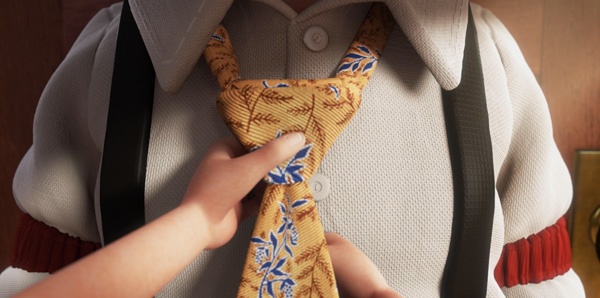

粤语独白翻译，选自林海峰专辑《三字头》，给今天生日的自己。 某一年，一班刚刚考完会考的同学约了一齐唱K。流行曲唱到一半的时候，其中一位朋友问了旁边那位一个问题：“喂，你猜二十年后的今天我们会变成一个什么样的人？” 二十年后，可能已经变成一个西装骨骨的中环人，手戴劳力士，银包有好多张信用卡。下班的时候就一起在酒吧里，一边看着烟灰缸，一边望住旁边台那美女，看她条裙什么时侯会走光。二十年后，大概终于买了辆很想拥有的汽车，但是还有二十几期要供。二十年，应该换过很多工作，会做的越来越多，但是同时发觉学识越来越少。在那期间，偶尔可能会去下健身房，但是做来做去都是减不掉那个肚腩。当然，二十年来你不自觉都会想起那段一路都未能放低的感情，女朋友越来越多，但是爱的越来越少。大概在那个时候，可能会有身边的亲人离开，而那时，你会有好多说不出口的遗憾，同时间，你会发觉，原来人生已经过了一大半。
同年，终于结婚了。用了半生的积蓄，付了一套房的首期，有车位，有泳池、会所，娱乐越来越多，但是快乐越来越少。两年后，可能会离婚，回复单身之后的一个晚上，一个人在床上，抓住遥控不停换台。吃了两粒安眠药，然后点起支薄荷烟，然后才留下一滴自亲人离世之后的眼泪。 突然之间你又想起，在二十年前你是一个什么人。在那一晚，一大班同学约出来一齐唱K，唱到天亮。还记得那天早上回到家的时候，你打开门，在桌上，看到一碗家人给留的汤。而那碗汤，已经凉了。